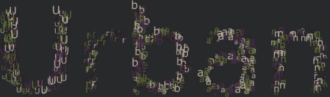

I was also playing with the bit bop script and thought "Why doesn't it fill the letters with the letters?" So I adjusted the script so that it would go through a for loop for each letter, performing a bit bop for each with the current letter. But did I stop there? Oh, no. I figured that random colors would look good, but color themes from Kuler would look even neater! It took me a while to download the libraries from dev.nodebox, but I eventually got it to work. Here is the code.
# Set the string to draw
s = "NodeBox"
kuler = ximport("kuler")reload(kuler)font("Verdana", 120)# Create the canvas so that it fits the text with 5 px marginssize(textwidth(s)+10, textheight(s)+10)# Queue Kuler for themes that match the string
themes = kuler.search(s)# If none result, give a sampleiflen(themes) == 0:
theme = [(1, 0, 0), (0, 1, 0), (0, 0, 1), (0, 0, 0), (1, 1, 1)]print"No results! Using sample theme."# Otherwise, choose the top matchelse: theme = themes[0]# We don't need the results any moredel themes
# Fill the background with the last color in the themebackground(theme[4])for i inrange(len(s)):
tp = textpath(s[i], textwidth(s[:i])+5, HEIGHT-15)#tp.draw() # Draws the underlying path# Here are the variables that influence the composition:
resx = 80# The horizontal resolution
resy = 80# The vertical resolution
rx = 2.0# The horizontal randomness each point has
ry = 2.0# The vertical randomness each point has
dotsize = 12.0# The maximum size of one dot.
dx = WIDTH / float(resx)# The width each dot covers
dy = HEIGHT / float(resy)# The height each dot covers# We create a grid of the specified resolution.# Each x,y coordinate is a measuring point where# we check if it falls within the path.for x, y ingrid(resx, resy):
sz=random(5.0, dotsize)# Create the point that will be checked
px = x*dx-sz
py = y*dy-sz
# Only do something if the point falls within the path bounds.# You could add an "else" statement, that draws something in the# empty positions.if tp.contains(px, py):
fontsize(sz)# Change the color for each pointfill(choice(theme[:4]))text(s[i], px+random(-rx, rx),
py+random(-ry, ry))# Set the fontsize back to fullfontsize(120)
Enjoy!
Posted by Tom De Smedt on Jul 25, 2007
Ha ha! Very nice. You beat me to the official release of the Web library. That's the spirit!


More Bit-Bopping
Posted by anonymous on Jul 25, 2007
I was also playing with the bit bop script and thought "Why doesn't it fill the letters with the letters?" So I adjusted the script so that it would go through a for loop for each letter, performing a bit bop for each with the current letter. But did I stop there? Oh, no. I figured that random colors would look good, but color themes from Kuler would look even neater! It took me a while to download the libraries from dev.nodebox, but I eventually got it to work. Here is the code.
Enjoy!